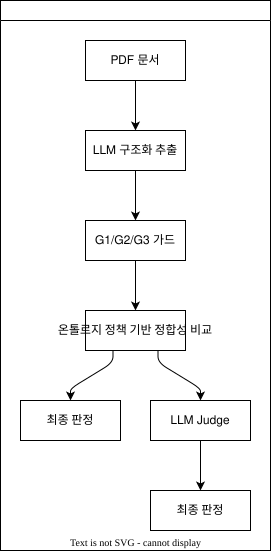

본 연구는 신탁계약서와 투자제안서(IM)의 정합성 검증을 위해 온톨로지 기반 필드 정책, 결정론적 파싱, 선택적 LLM Judge, 가드 및 통계 평가를 결합한 하네스를 설계한다. 연구의 핵심 질문은 결정론적으로 해결 가능한 수치·날짜·형식 문제를 코드로 먼저 처리하고 의미 수준의 미해결 항목에만 LLM을 사용하는 구조가, 정규화부터 판정까지 LLM을 폭넓게 사용하는 구조보다 우수한가이다.
골든셋 v0.2의 80케이스를 대상으로 세 아키텍처를 비교하였다. Tier 1은 온톨로지 필드 정책과 결정론 파서만 사용하고, Tier 2는 Tier 1이 해결하지 못한 항목에만 LLM Judge를 선택적으로 호출하며, Tier 3은 LLM 정규화와 Judge를 폭넓게 사용한다. 세 Tier에는 G1 형식, G2 출처, G3 제약 가드를 공통 적용하였다. Tier별로 30회 반복한 결과 Tier 2는 Tier 3과 사실상 동일한 재현율을 유지하면서 정밀도를 높였고, F2-Score 0.896과 업무 효율성 지수 96.1%를 기록하였다. Tier 2와 Tier 3의 F2 차이는 통계적으로 유의하였다.
결과는 온톨로지 정책으로 명시할 수 있는 문제를 결정론적으로 해결하고, 의미 판단이 필요한 그레이존에만 LLM을 투입하는 하네스 설계 원칙을 지지한다. RDF/ABox와 SHACL은 감사 가능한 구조화 표현과 문서 내부 제약 진단을 제공하지만, 본 3-Tier 실험에서 성능 차이의 독립변수로 사용되지는 않았다.
사모펀드 문서 검토에서는 신탁계약서의 핵심 조건이 IM에 정확히 반영되었는지 확인해야 한다. 수작업 대조는 시간이 많이 들고 피로에 따른 누락 위험이 있다. 반면 LLM 단독 검토는 가짜 인용, 단위 오해, 날짜 추론 누락과 의미 과잉 해석을 일으킬 수 있다.
본 연구는 LLM을 최종 판정기로 단독 사용하지 않는다. 도메인 개념과 필드별 의미를 온톨로지 정책으로 명시하고, 기계적으로 해결 가능한 값은 결정론 코드로 비교하며, 남은 의미적 동등성 문제만 LLM에 위임한다.
연구 질문은 다음과 같다.
하네스는 LLM 또는 추출기의 출력을 그대로 최종 판단으로 사용하지 않고, 입력 형식, 출처, 업무 제약, 비교 근거와 판정 경로를 단계적으로 통제하는 검증 구조이다. 본 연구의 하네스는 PDF 문서에서 구조화된 필드 값을 추출한 뒤, 공통 가드와 온톨로지 정책 기반 비교를 거쳐 필요한 경우에만 LLM Judge를 호출하도록 설계하였다. 전체 흐름은 Figure 1과 같다.

결정 가능 미해결 + Judge 요청실제 운용 경로는 PDF 문서에서 시작한다. 본 성능 비교에서는 세 Tier에 동일한 원문 근거와 출처 정보를 입력하여, 추출 이후 각 아키텍처가 정합성 여부를 어떻게 판정하는지를 비교하였다.
그림의 메인 흐름은 정합성 판정에 직접 관여하는 경로이다. PDF에서 추출된 계약서와 IM의 후보 값은 먼저 G1/G2/G3 가드를 통과해야 하며, 이후 필드별 온톨로지 정책에 따라 표준화와 비교가 수행된다. 수치, 날짜, 불리언처럼 규칙으로 비교 가능한 항목은 이 단계에서 확정된다. 반대로 명칭 변형이나 서술형 조건처럼 규칙만으로 판단하기 어려운 항목은 정책상 허용된 경우에만 선택적 LLM Judge로 전달된다.
실제 운용 경로는 PDF 문서에서 시작하지만, 본 논문의 성능 비교는 PDF에서 텍스트와 조항을 찾아내는 추출기 자체의 성능을 평가 대상으로 삼지 않는다. 세 Tier를 공정하게 비교하기 위해 각 실험에는 골든셋에 미리 정리된 계약서와 IM의 원문 근거 및 페이지 출처를 동일하게 입력하였다. 따라서 결과는 동일한 비교 근거가 주어졌을 때 각 아키텍처가 정합성 여부를 얼마나 정확하고 효율적으로 판정하는지를 나타낸다.
세 Tier에는 동일한 G1/G2/G3 가드가 적용된다. 가드는 LLM의 의미 판단을 대체하기 위한 장치가 아니라, 판정에 들어가기 전에 명백히 잘못된 입력이나 업무상 불가능한 값을 차단하는 안전 계층이다.
G1은 형식 가드이다. 구조화 추출 결과가 사전에 정의된 스키마를 만족하는지 확인하고, 필수 필드와 자료형이 깨진 결과를 정합성 비교 단계로 넘기지 않는다. 예를 들어 계약서와 IM의 각 값은 원문 근거, 단위 후보, 문서 종류, 페이지 출처를 포함하는 구조로 표현되어야 한다. 이 구조가 무너지면 이후 비교 결과를 신뢰할 수 없기 때문에 G1에서 먼저 걸러진다.
G2는 출처 가드이다. 정합성 판정은 값 자체뿐 아니라 그 값이 어느 문서의 어느 페이지에서 나왔는지에 의존한다. 따라서 G2는 인용된 문서 종류가 계약서 또는 IM 중 올바른 대상인지, 페이지 번호가 해당 PDF의 허용 범위 안에 있는지 확인한다. 이 단계는 가짜 인용이나 존재하지 않는 페이지를 근거로 한 판정을 방지한다.
G3는 제약 가드이다. G3는 도메인상 허용 가능한 값의 범위와 필드 간 관계를 검사한다. 예를 들어 보수율은 필드별 허용 범위를 벗어나면 유효한 비교값으로 인정하지 않으며, 만기일은 설정일보다 뒤에 있어야 한다. 이러한 검사는 LLM을 호출하지 않는 결정론 코드로 수행되며, 세 Tier 모두에 동일하게 적용된다.
본 연구에서 온톨로지는 RDF 그래프만을 의미하지 않는다. 신탁계약서 검토에 필요한 도메인 개념, 필드 의미, 값의 단위, 비교 방식과 파생 관계를 명시한 실행 가능한 의미 모델을 뜻한다. 본 연구는 신탁계약서 도메인을 Fund, Party, FeeSchedule, RedemptionTerms의 4개 개념과 14개 필드로 구성하고, 각 필드가 어떤 종류의 계약 조건을 나타내는지 정의한다.
온톨로지 정책은 이 도메인 모델을 실제 판정 절차로 연결한다. 각 필드는 값 유형, 표준화 방식, 비교 방법, 허용 범위, 결측 의미와 Judge 허용 여부를 가진다. 이 정책은 “문자열이 같은가”가 아니라 “두 문서가 같은 계약 조건을 말하는가”를 판단하기 위한 기준이다. 따라서 정책 기반 비교는 계약서와 IM의 원문 표현을 필드별 canonical value로 변환하고, 변환된 값과 단위를 기준으로 정합성을 판정한다.
canonical value는 문서에 적힌 표현을 비교 가능한 표준 표현으로 바꾼 값이다. 동일한 계약 조건이라도 문서마다 표기 방식이 다를 수 있으므로, 하네스는 필드의 의미에 맞는 표준형을 먼저 만든다. Table 1은 본 연구에서 사용한 14개 필드의 정책 요약이다.
Table 1. 온톨로지 필드별 표준화 및 비교 정책
| 개념 | 필드 | 값 유형 | 표준화 방식 | 비교 및 Judge 정책 |
|---|---|---|---|---|
| Fund | 펀드명 | text | 원문 근거 유지 | 의미 동등성은 Judge 허용 |
| Fund | 펀드 유형 | text | 원문 근거 유지 | 의미 동등성은 Judge 허용 |
| Fund | 설정일 | date | 절대 날짜 → ISO 날짜 | 날짜 일치, Judge 미사용 |
| Fund | 만기일 | date | 절대 날짜 또는 설정일+기간 → ISO 날짜 | 날짜 일치, Judge 허용 |
| Party | 운용사 | entity_name | 원문 근거 유지 | 명칭 변형은 Judge 허용 |
| Party | 신탁업자 | entity_name | 원문 근거 유지 | 명칭 변형은 Judge 허용 |
| Party | 판매사 | entity_name | 원문 근거 유지 | 명칭 변형은 Judge 허용 |
| FeeSchedule | 운용보수 | percent_per_year | 분수·%·bp → 연율 퍼센트 | 수치 일치, 0~5% 범위 |
| FeeSchedule | 신탁보수 | percent_per_year | 분수·%·bp → 연율 퍼센트 | 수치 일치, 0~2% 범위 |
| FeeSchedule | 판매보수 | percent_per_year | 분수·%·bp → 연율 퍼센트 | 수치 일치, 0~3% 범위 |
| RedemptionTerms | 환매 가능 여부 | boolean | 가능·불가 표현 → 참·거짓 | 불리언 일치, Judge 허용 |
| RedemptionTerms | 락업 기간 | duration | 기간 표현 → 개월 수 | 기간 일치, Judge 미사용 |
| RedemptionTerms | 환매 주기 | text | 원문 근거 유지 | 의미 동등성은 Judge 허용 |
| RedemptionTerms | 환매수수료 | percent_per_year | 보수율 또는 부재 표현 해석 | 수치 일치, 부재는 0값 의미 |
표에서 보듯이 정책의 목적은 모든 필드를 하나의 방식으로 강제하는 것이 아니라, 필드의 의미에 맞는 비교 단위를 지정하는 것이다. 보수율은 연율 퍼센트로, 날짜는 ISO 날짜로, 기간은 개월 수로, 불리언은 참·거짓 값으로 비교한다. 반면 펀드명, 운용사, 판매사처럼 명칭 변형이나 약칭이 중요한 필드는 원문 근거를 보존하고 정책상 허용된 경우에만 Judge가 의미 동등성을 판단한다.
선택적 LLM Judge는 모든 비교 항목에 LLM을 적용하는 방식이 아니다. 먼저 온톨로지 정책과 결정론 파서가 정합성 여부를 판단한다. 이 단계에서 수치, 날짜, 불리언처럼 표준화 규칙으로 비교 가능한 항목은 결정론 결과를 최종 판정으로 사용한다. LLM Judge는 결정론 비교가 확정하지 못한 항목 중에서, 해당 필드의 정책이 의미 판단을 허용한 경우에만 호출된다.
이 설계의 목적은 LLM의 장점과 위험을 분리하는 것이다. 약칭, 명칭 변형, 서술형 조건처럼 규칙만으로 의미 동등성을 판단하기 어려운 항목에서는 LLM이 보조 판정기로 유용할 수 있다. 반면 보수율, 날짜, 페이지 출처처럼 명시적 규칙으로 검증 가능한 항목까지 LLM에 맡기면 단위 오해, 과잉 해석, 가짜 근거 생성의 위험이 커진다. 따라서 Tier 2는 결정론 비교를 우선 적용하고, 남은 그레이존에만 LLM을 제한적으로 사용한다.
RDF/ABox는 계약서와 IM에서 추출된 raw_text를 서로 다른 인스턴스로 표현한다. SHACL은 펀드명 존재, 개념 간 연결, 신탁업자 개수, 보수 범위 및 만기일 관계를 진단한다.
이 계층의 목적은 감사 가능성과 문서 내부 구조 검증이다. ABox/SHACL 진단은 추출 근거와 문서 내부 제약을 감사 가능한 형태로 남기지만, 본 연구의 3-Tier 비교에서는 예측 라벨을 직접 변경하지 않는다. 세 Tier 모두 같은 온톨로지 도메인 구조와 가드를 공유하므로 RDF/SHACL 유무의 효과를 분리해 측정하지 않으며, SHACL 자체가 Tier 2의 성능 향상을 만들었다고 주장하지 않는다.
골든셋 v0.2는 총 80케이스다.
| 구분 | 건수 |
|---|---|
| 정상 일치 | 31 |
| 정당한 결측 | 4 |
| 불일치 변조 | 45 |
| 합계 | 80 |
정당한 결측은 분류 성능의 confusion matrix에서 제외한다. 각 케이스는 4개 개념·14개 필드 중 하나를 대상으로 하며 원문, 페이지, 정답 라벨, 변조 유형, 난이도와 예상 검출 신호를 포함한다.
세 Tier에는 동일한 가드를 적용한다.
본 실험은 골든셋 원문을 유효한 Pydantic 객체로 구성하므로 G1의 재시도 효과를 독립적으로 측정하지 않는다. G2와 G3는 조작된 페이지 및 범위 위반을 실제 예측에 반영한다.
| Tier | 식별자 | 방식 |
|---|---|---|
| Tier 1 | ontology_policy |
온톨로지 정책과 결정론 파서만 사용. 미해결 항목은 review |
| Tier 2 | ontology_policy_judge |
Tier 1 우선. 정책상 허용된 미해결 항목에만 LLM Judge |
| Tier 3 | harness_norm_judge |
LLM normalization을 폭넓게 적용한 후 LLM Judge |
Tier 1은 LLM을 사용하지 않는다. Tier 2와 Tier 3은 동일한 claude-sonnet-4-6과 temperature 0.7을 사용한다. Tier 2가 본 연구의 제안 아키텍처이고 Tier 3은 Full-LLM 비교군이다.
불일치를 양성으로 정의한다.
F2 = 5PR / (4P + R)
EI = (1 - (T_AI + FP × T_Review) / T_Manual) × 100EI에는 T_Manual=180분, T_AI=2.5분, T_Review=2분을 적용한다.
각 Tier는 80케이스 전체를 30회 평가한다. Tier 1은 결정론적이므로 모든 반복이 같은 값이다. Tier 2와 Tier 3의 차이는 Welch 독립표본 t검정과 Mann–Whitney U 검정으로 평가하고 Cohen's d를 산출한다. Tier 1과의 비교에는 Tier 1 값을 기준으로 한 일표본 t검정을 사용한다.
| 지표 | Tier 1 | Tier 2 | Tier 3 |
|---|---|---|---|
| Accuracy | 0.526 | 0.902 | 0.868 |
| Precision | 1.000 | 0.946 | 0.889 |
| Recall | 0.556 | 0.885 | 0.887 |
| F1 | 0.714 | 0.914 | 0.888 |
| F2 | 0.610 | 0.896 | 0.888 |
| EI | 98.6% | 96.1% | 93.1% |
Tier 1은 FP가 없지만 45건의 불일치 중 평균 20건을 놓쳤다. Tier 2와 Tier 3의 Recall 차이는 0.002로 매우 작다. Tier 2는 평균 FP가 2.27건으로 Tier 3의 5.0건보다 적어 F2와 EI에서 우수했다.
| 비교 | 평균 차 | 통계량 | p-value |
|---|---|---|---|
| Tier 2 vs Tier 1 F2 | +0.286 | t=197.4 | 6.3×10⁻⁴⁷ |
| Tier 3 vs Tier 1 F2 | +0.278 | t=331.0 | 2.0×10⁻⁵³ |
| Tier 3 vs Tier 2 F2 | -0.009 | t=-5.04 | 7.4×10⁻⁶ |
| Tier 3 vs Tier 2 EI | -3.04%p | t=-20.2 | 6.3×10⁻²⁸ |
Tier 2는 Tier 3 대비 F2와 EI에서 통계적으로 유의하게 우수했다. Mann–Whitney U 검정도 같은 방향의 결론을 보였다.
%와 1,000분의 N을 처리하지만 bp나 월/연 환산의 커버리지는 제한적이다.Tier 3은 수치와 날짜처럼 결정론적으로 처리할 수 있는 항목에도 LLM을 사용한다. 이는 Recall을 실질적으로 높이지 않으면서 FP와 반복 변동성을 증가시켰다. Tier 2는 온톨로지 정책이 확정할 수 있는 항목을 코드로 처리하고 약칭, 엔티티명, 서술 조건 등 의미적 그레이존에만 LLM을 사용한다.
따라서 본 연구가 지지하는 원칙은 “온톨로지를 사용하면 자동으로 성능이 높아진다”가 아니다. 정확한 결론은 다음과 같다.
도메인 온톨로지를 실행 가능한 필드 정책으로 변환하여 결정론적으로 적용하고, 정책으로 해결되지 않은 의미 판단에만 LLM을 사용하는 구조가 Full-LLM 구조보다 효과적이다.
80케이스를 Tier별 30회 평가한 결과, 온톨로지 정책 기반 결정론 비교 후 미해결 항목에만 LLM Judge를 사용하는 Tier 2가 Full-LLM Tier 3보다 높은 F2와 EI를 보였다. 이 결과는 금융 문서 검증에서 LLM 사용량을 늘리는 것보다 명시적인 도메인 정책과 결정론 경계를 먼저 설계하는 것이 중요함을 보여준다.
database/gemma4_30reps/tier*/rep_*.jsondatabase/gemma4_30reps/stats.jsonsrc/experiments/tier_contract.pyontology/field_policies.yamlsrc/canonical/src/scoring/evaluate.py